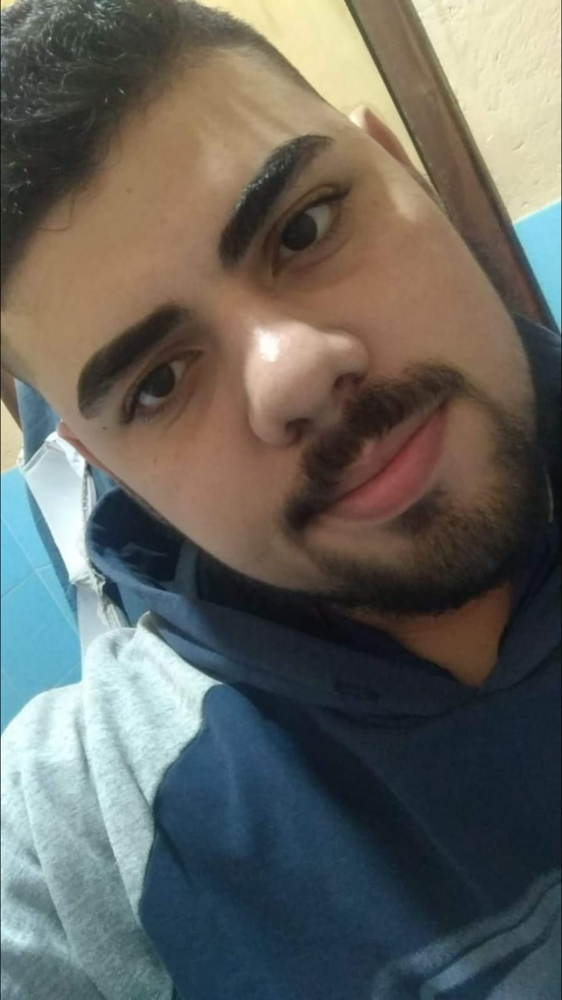

Meu nome é Victor Alves Bordignon, já fiz de tudo na minha vida e agora estou vivendo uma nova aventura na trybe! Sou nascido e criado em Petrópolis-Rj, vivendo até hoje nessa cidade maravilhosa.
 Antes mesmo de me formar no ensino médio, eu já havia feito cursos de elétrica, mecânica e até mesmo montagem e manutenção de computadores. Após me formar, trabalhei como auxiliar administrativo, garçom, atendendente, frentista e entre outros.
Com isso, consegui desenvolver uma série de habilidades, que só a vivência de certas situações poderia desenvolver. Uma das que mais me orgulho, é meu senso de empatia em relação ao próximo, que me permite ser empático com as pessoas. Mas também desenvolvi outras, tais como: